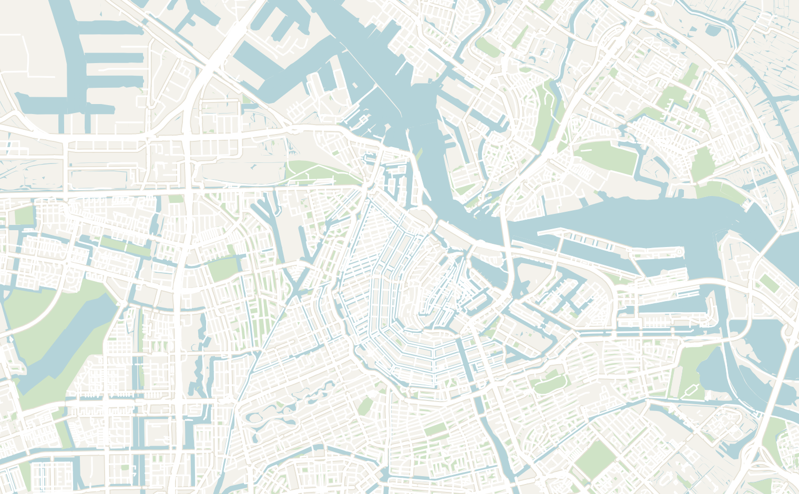
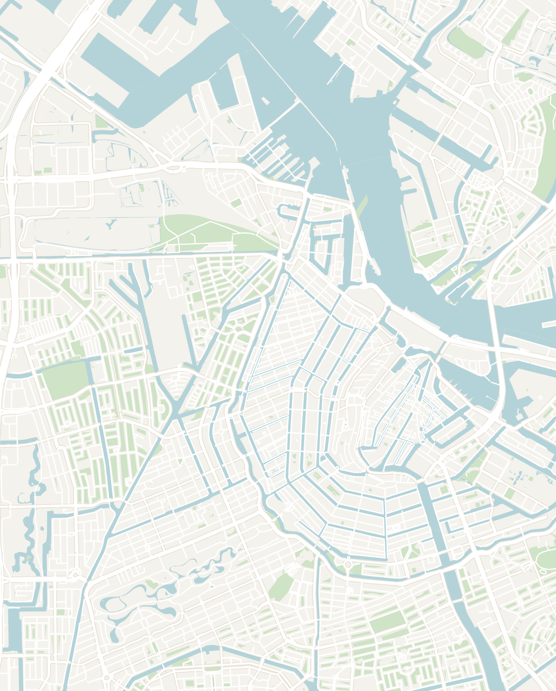

General
The Netherlands is one of Europe's most effortlessly enjoyable countries to explore. Beyond its iconic windmills, canals, and gabled houses lies a nation built around cycling, world-class museums, charming historic towns and a remarkably relaxed way of life. Most visitors base themselves in Amsterdam, but thanks to the country's compact size and excellent public transport, it's easy to venture beyond the capital to discover quieter cities, picturesque villages, and a more local side of the Netherlands.
- Getting around
- Flights — fly into Amsterdam Airport Schiphol (AMS), one of Europe's busiest and best-connected airports. Frequent trains reach Amsterdam Central in around 15–20 minutes
- Trains — the Netherlands has one of Europe's best rail networks, with fast, frequent, and reliable services. Most major cities (including Rotterdam, Utrecht, The Hague, and Haarlem) are within one to two hours of Amsterdam
- Bikes — the Netherlands is the cycling capital of the world, and there's no better way to experience Amsterdam than by bike. An extensive network of dedicated cycle paths makes getting around easy
- Money — as a member of the European Union, the Euro is the official currency of the Netherlands. I found the country mid-to-high priced by European standards, with Amsterdam being the most expensive part
- Food — food in the Netherlands is very international and you can find cuisines from all over the world. I would encourage you to try some classic Dutch food. It snacky, satisfying and fun to sample. Some highlights include fresh stroopwafels (thin caramel-filled waffles) hot off a market griddle, aged cheeses like Gouda and plenty of fried foods like a cone of fries with mayo or curry ketchup, currywurst, frikandel and bitterballen. If you're feeling a bit more adventurous, try theraw herring eaten by the tail!
- Language — Dutch is the official language and one of the closest Germanic languages to English. However, English is spoken almost universally and fluently: one of the easiest countries anywhere for an English speaker, making it easy to connect with locals
- People & Culture — I have probably met more Dutch people traveling abroad than in the Netherlands itself! I really get along with Dutch people and find them very friendly, curious and down to Earth. They are famously very blunt and willing to speak their minds, but I never found it off putting or rude. As a Northern European culture, you'll find things are more familiar than they are different in the Netherlands
- How long to stay — For first-timers, I'd recommend spending 3–4 days in Amsterdam and adding on a day trip or two
Amsterdam
3–4 days recommendedAmsterdam is one of Europe's most distinctive capitals: a city of UNESCO-listed canals, narrow gabled merchant houses, world-class museums, and a famously liberal, easygoing culture. It's compact, endlessly walkable (or bikeable), and full of character. Amsterdam has become the home and capital of Electronic Music, making it an amazing place to see your favorite artists or attend festivals.
Spend 3 to 4 days wandering the canal belt, cycling through leafy neighborhoods, or relaxing at a waterside café. The historic center can feel crowded and over touristed, especially around Dam Square, so I'd stay just outside the busiest areas and visit the major sights early in the day.
- Canal Ring Walks — one of the first things that comes to mind when visiting Amsterdam are the 17th-century ring canals are surround the city. Simply wandering them is the best thing to do in Amsterdam. They're everywhere and hard to miss
- The Jordaan neighborhood and the four grand canals of the Grachtengordel are the most photogenic, lined with narrow gabled merchant houses, houseboats and hump-backed bridges
- Canal Boat Tour — I know it is touristy, but one of the best ways to visit the canals is to join a boat tour. It is cheap, running you about ~15 to 20 euros, and lasts about an hour. It's a relaxing ride through the canals, you'll pass by all the famous sites and you might even learn some history along the way
- Dam Square & the Royal Palace — Dam Square is the broad historic heart of the city, anchored by the grand 17th-century Royal Palace and the tall white National Monument War Memorial. It's always thick with crowds, trams and street performers, so it's more a landmark to pass through and get your bearings by than a place to linger
- Albert Cuyp Market — the biggest daily street market in the country. Albert Cuyp Market is a long run of stalls through the De Pijp neighborhood selling cheese, fish, flowers, clothes and almost everything else. Come hungry since it is a great place to grab a bite and sample Dutch specialties: I had the most heavenly warm and soft stroopwafel pressed fresh off the iron, tried a raw herring sandwich with onions, and had a few hot poffertjes or mini-pancakes
- NDSM Neighborhood — hop the free ferry from behind Centraal Station across the river to Amsterdam Noord and the NDSM wharf. It is one of my favorite areas in the city. Once a gritty former shipyard, it has since been reinvented as a creative playground of warehouses, murals, studios and festivals. It is a fun area to wander around and see a sharp contrast to the classic old town across the water
- STRAAT Museum — by far the best thing to do in NDSM is the STRAAT Museum. It is a giant hangar and museum of street art and graffiti with huge works by artists from around the world. There are some very impressive pieces here even if you're not particularly into graffiti.
- Stick around for the industrial-chic cafés and restaurants: grab bitterballen and a beer at a waterside spot and watch the ferries cross. The best place to spend free half-day in the city
- Rijksmuseum — the great national museum of the Netherlands and one of the best art museums in ,Europe located in a palace-like building. You'll find a hall of famous Dutch Golden Age artists including Rembrandt, Vermeer and Hals. Book a timed ticket ahead to skip the queues, give it a couple of hours or longer if you're into classical art
- Vondelpark — the city's big, leafy central park and its collective back garden. On the first warm day of the year, all of Amsterdam decamps here to cycle, jog, picnic, drink and sprawl on the grass. It's the perfect place to slow down for an afternoon with a book, with a couple of café terraces and an open-air theater in summer. A lovely, free escape from the touristy, busy center of the city
- The Red Light District — if you're curious like I was, the Red Light District (or formally the De Wallen district) is worth walking through once after dark. There is a sharp contrast between the neon-lit windows and sex shops threaded around some of the oldest, prettiest canals in the city. It's crowded and touristy, and make sure to be respectful and never photograph the windows
- Anne Frank House — the actual canal house and secret annex behind a hinged bookcase where Anne Frank and her family hid for two years. It is now a deeply moving museum built around her diary. It is extremely popular; tickets are released online only a few weeks ahead and vanish within minutes. You'll need to plan advance to book a visit and you cannot just turn up if you're interested in visiting
- Heineken Experience — a tourist staple and brewery tour through the Heineken factory in Amsterdam. I found it a bit too touristy for my own taste and it felt like an hour long Heineken advertisement, but go if you're interested
- Utrecht — just 20 minutes by train from Amsterdam lies Utrecht, the 4th largest city in the Netherlands. I personally enjoyed Utrecht, more than Amsterdam. It felt like a smaller, less-touristed Amsterdam without the madness and grittiness of the weed shops and stag parties.
- Its signature split-level canals are now full of café terraces and you can climb a big Gothic cathedral tower. I really enjoyed the lively Vredenburg Market (only on Wednesday, Friday & Saturday). You can enjoy the poffertje (mini-pancake coated in powdered sugar) stalls and a laid-back university-town energy. It's a charming day trip from Amsterdam, or an easy alternative base
- Festivals — the Netherlands has one of the best festival cultures in the world. Almost every town, no matter how big, has its own festival during the summer so there is no shortage to choose from. Here are some of the largest festivals in the country that are worth visiting:
- Amsterdam Dance Event (ADE) — the world's largest electronic music festival and conference, held every October. For five days, Amsterdam transforms into the global capital of electronic music. It is not your traditional festival where there are a bunch of stages in one location. Instead, it operates a tons of separate venues across the city; hundreds of clubs, warehouses, and concert venues host continuous sets from world-class DJs for the entire week. I went in 2021 and had a great time at the popular night club called Jimmy Woo
- Koningsdag ("Kings Day") — celebrated every 27 April, the Netherlands' biggest national holiday is Koningsdag ("Kings Day"). During the holiday, you'll see Amsterdam erupt into a citywide street party. Canals fill with boats, parks become giant flea markets, and almost everyone dresses head-to-toe in orange (in classic Dutch fashion) to celebrate the King's birthday
- The food in Amsterdam is very international. On my longer trip here, I found myself eating international cuisine like Turkish food and Indonesian food. If you're looking to try local Dutch food, the Albert Cuyp Market is your best bet where you can wander around the various food stalls and try some fresh stroopwafelsand bitterballen
- The Pancake Bakery — serves big classic sweet and savory Dutch pancakes in an atmospheric canal-side cellar. The pancakes were fantastic. I later found out from my Dutch friends that they don't actually eat pancakes anymore than we do (despite what your online guidebook will have you believe...)
- The Hoxton, Amsterdam — the Hoxton is one of my favorite hotel chains. The location in Amsterdam is a stylish boutique hotel set across a row of historic canal houses in the central Jordaan neighborhood. Its central location, character-filled rooms, and lively lobby make it one of the best places to stay in the city
- Hyatt Regency Amsterdam — a modern, upscale hotel in the quieter Plantage neighborhood, offering spacious rooms, excellent service, and easy access to the canal belt, museums, and public transport. A great choice if you want to stay just outside the busiest tourist areas
- The Flying Pig — a well-known, backpacker hostel with two branches in Amsterdam (one by the main train station and one farther out by Vondelpark). Be warned that the Flying Pig Downtown is a full-on party hostel (probably one of the most famous party hostels in all of Europe, in case that isn't the vibe you're looking for. Other than that, the location is fantastic and easily walkable to most tourist sites


Double-tap to open in Google Maps
Other Places to Consider
The Netherlands is compact and exceptionally well connected, making it easy to explore beyond Amsterdam. Many of the country's highlights are just a short train ride away:
- Rotterdam — Amsterdam's bold, modern competition. Rotterdam was flattened in WWII and rebuilt with modern architecture including the tilted yellow Cube Houses and the pencil tower to the vast arched Markthal food hall with its painted ceiling. It is also Europe's biggest port and a gritty-cool arts scene
- The Hague — the stately seat of Dutch government and the international courts, it is greener and more buttoned-up than Amsterdam. The highlights are the art museum, Mauritshuis and the grand parliament buildings and, in summer, the wide sandy beach and pier in Scheveningen
- Keukenhof & the tulip fields — the world's largest flower garden. It is only open for about eight weeks each spring (roughly late March to mid-May), when seven million tulips, daffodils and hyacinths bloom. If your trip lines up with the season, it's unforgettable, but there is not much to see the rest of the year
- Giethoorn — known as the "Venice of the North," Giethoorn is a village where thatched farmhouses sit on their own little islands linked only by canals and arched wooden footbridges, with no roads through the old center. You can explore by whisper-boat or on foot over the bridges. It's tiny and gets swamped with tour groups midday, so come early
- Kinderdijk — a row of nineteen 18th-century windmills lined up along the polder canals, built to pump water off the low-lying land and now a UNESCO site. You can walk or cycle the dyke between them, step inside a working mill to see how the millers lived, and take a boat through the reeds. An easy, photogenic half-day from Rotterdam